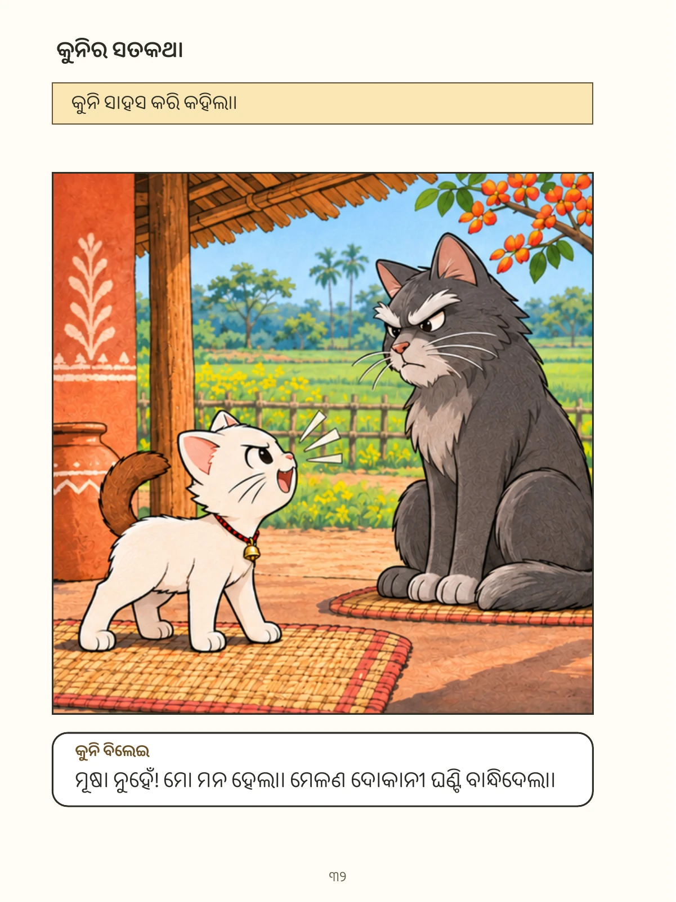

ମୂଳ ବିଷୟକୁ ଯାଆନ୍ତୁ
ବିଲେଇ ବେକରେ ଘଣ୍ଟି
ଶିଶୁ କିଶୋର
କାହାଣୀ · ୨୯
← ପୂର୍ବ ପୃଷ୍ଠା
୩୩ / ୬୨
ପର ପୃଷ୍ଠା →
ବଡ଼ କରି ଦେଖନ୍ତୁ
·
ସମ୍ପୂର୍ଣ୍ଣ ପୁସ୍ତକ PDF

କାହାଣୀ · ୨୯
← ପୂର୍ବ ପୃଷ୍ଠା
୩୩ / ୬୨
ପର ପୃଷ୍ଠା →
ଏହି ପୃଷ୍ଠାର ଲେଖା
କୁନିର ସତକଥା କୁନି ସାହସ କରି କହିଲା। କୁନି ବିଲେଇ ମୂଷା ନୁହେଁ! ମୋ ମନ ହେଲା। ମେଳଣ ଦୋକାନୀ ଘଣ୍ଟି ବାନ୍ଧିଦେଲା।
ସବୁ ପୃଷ୍ଠା
୧
୨
୩
୪
୫
୬
୭
୮
୯
୧୦
୧୧
୧୨
୧୩
୧୪
୧୫
୧୬
୧୭
୧୮
୧୯
୨୦
୨୧
୨୨
୨୩
୨୪
୨୫
୨୬
୨୭
୨୮
୨୯
୩୦
୩୧
୩୨
୩୩
୩୪
୩୫
୩୬
୩୭
୩୮
୩୯
୪୦
୪୧
୪୨
୪୩
୪୪
୪୫
୪୬
୪୭
୪୮
୪୯
୫୦
୫୧
୫୨
୫୩
୫୪
୫୫
୫୬
୫୭
୫୮
୫୯
୬୦
୬୧
୬୨